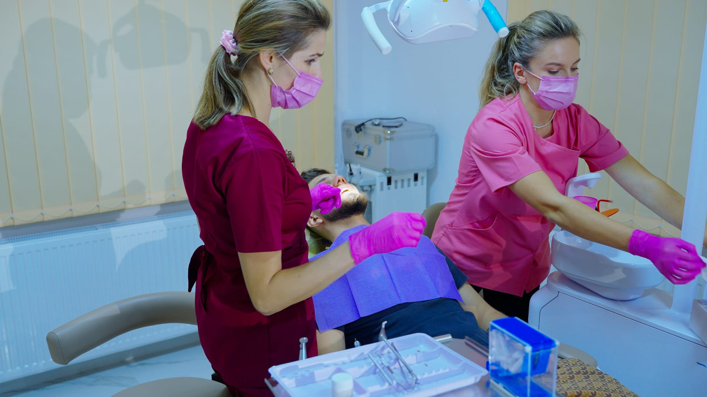

Consultație și diagnostic
Începem cu o evaluare atentă, pentru a înțelege starea dentară și nevoile pacientului.
În funcție de nevoia ta, poți afla mai multe despre fiecare tratament disponibil în cadrul HopeDent sau poți programa o consultație pentru o recomandare adaptată situației tale.
Consultații, igienizări, obturații și tratamente uzuale pentru menținerea sănătății dentare.
Află mai multe 02Îngrijire dentară pentru copii, cu răbdare, adaptare și o abordare blândă.
Află mai multe 03Soluții pentru înlocuirea dinților lipsă, cu planificare atentă și tratamente adaptate cazului.
Află mai multe 04Tratamente dedicate aspectului zâmbetului, de la albire dentară până la soluții estetice personalizate.
Află mai multe 05Corectarea poziției dinților și a mușcăturii prin tratamente ortodontice pentru copii și adulți.
Află mai multe 06Coroane, punți și lucrări protetice pentru refacerea funcției și esteticii dentare.
Află mai multe 07Evaluarea și tratarea problemelor gingivale și ale țesuturilor care susțin dinții.
Află mai multe 08Intervenții chirurgicale orale realizate cu atenție, siguranță și planificare corectă.
Află mai multeNe dorim ca fiecare pacient să înțeleagă ce se întâmplă, de ce este recomandat un anumit tratament și care sunt pașii următori. Comunicarea clară face tratamentul mai ușor de parcurs.
Începem cu o evaluare atentă, pentru a înțelege starea dentară și nevoile pacientului.
Medicul îți prezintă opțiunile de tratament, etapele și recomandările potrivite.
Fiecare procedură este realizată cu grijă, într-un ritm adaptat confortului pacientului.

HopeDent oferă tratamente pentru pacienți de toate vârstele. Copiii au nevoie de răbdare și adaptare, adulții au nevoie de claritate și soluții eficiente, iar tratamentele complexe cer colaborare între specialități.